Guidelines
Institutional guidelines
67 guidelines across UCSF Health, ZSFG, the VA and the Benioff Children's Hospitals. Your Where lens brings your hospital's to the top; PDF opens on idmp.ucsf.edu without login and UCSF login means Box or SharePoint.
Therapeutic Drug Monitoring
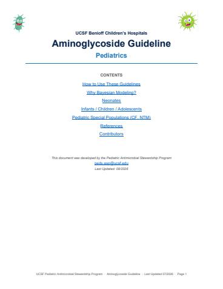
Aminoglycoside Guidelines Pediatrics UCSFBCH OaklandBCH SFPDF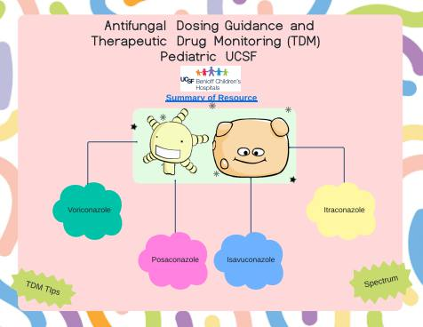
Antifungal Dosing Guidance and TDM Pediatrics UCSFBCH OaklandBCH SFPDF- Azole Therapeutic Drug Monitoring
UCSF Health Adult (18+ years) Azole Therapeutic Drug Monitoring Reference Document
Mission BayMt ZionParnassusStanyan/HydeZSFGFull textJul 10, 2025 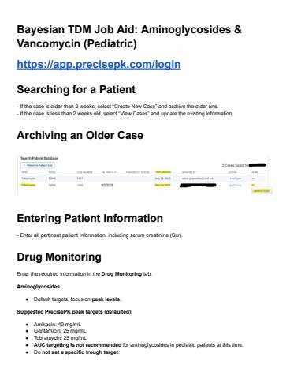
Bayesian TDM Job Aid: Aminoglycosides & Vancomycin (Pediatric)BCH OaklandBCH SFPDF
Syndrome Specific Guidelines
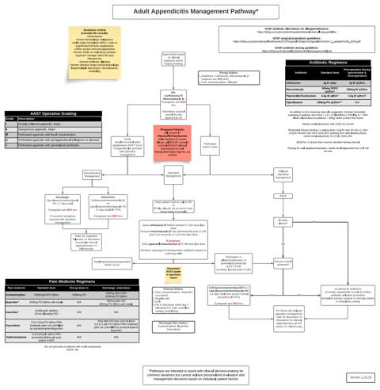
Adult Appendicitis PathwayMission BayMt ZionParnassusStanyan/HydePDFFeb 19, 2025 Allergy (Beta-lactam)
Allergy (Beta-lactam)Inpatient Beta-lactam Allergy Guideline
BCH OaklandBCH SFMission BayMt ZionParnassusPDFFull textOct 15, 2024 Antibiotic Lock Therapy
Antibiotic Lock TherapyUCSF Medical Center Adult Inpatient Antibiotic Lock Therapy (ALT) Guidelines
Mission BayMt ZionParnassusStanyan/HydePDFFull textJan 6, 2025- Antimicrobial Guidebook SFVA
Comprehensive guide to antimicrobial use at San Francisco VA Medical Center.
VAJun 27, 2023 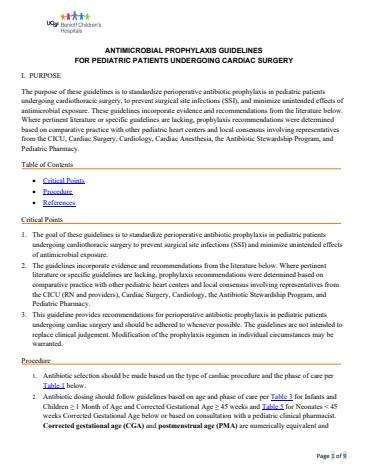
Antimicrobial Prophylaxis Guidelines for Pediatric Cardiac Surgery PatientsBCH OaklandBCH SFPDFAug 24, 2026 Benioff Children's Hospitals Guidelines for Fever in Patients Receiving Cancer Therapy and/or Hematopoietic Transplantation
Benioff Children's Hospitals Guidelines for Fever in Patients Receiving Cancer Therapy and/or Hematopoietic TransplantationPURPOSE/SCOPE: To provide standardized guidelines for management of fever in patients who have received chemotherapy or hematopoietic transplantation, including all hospital units and…
BCH OaklandBCH SFPDFUCSF loginFull textApr 11, 2024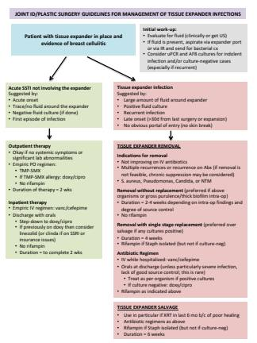
Breast Tissue Expander InfectionGuidelines for management of infections of tissue expanders.
Mission BayMt ZionParnassusStanyan/HydePDFJul 22, 2021- Clostridioides difficile Infection
UCSF Medical Center Adult Clostridioides difficile management guidelines
Mission BayMt ZionParnassusStanyan/HydeFull textDec 8, 2025 - Clostridioides Difficile Infection (CDI) Treatment Guidelines SFVA
Clostridioides difficile Infection (CDI)
VAFull textSep 27, 2023 - Code SepsisMission BayMt ZionParnassusStanyan/HydeUCSF loginJul 1, 2019
- Community Acquired Pneumonia (CAP) Treatment Guidelines SFVA
Community Acquired Pneumonia (CAP)
VAFull textNov 29, 2023 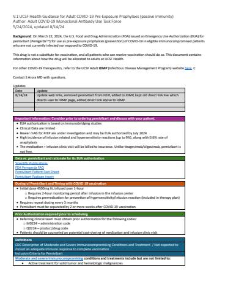
COVID-19 Treatment GuidanceNote: This is the Infectious Diseases Management Program COVID-19 site, which will house treatment related guidance going forward. For Hospital Epidemiology and Infection prevention's…
Mission BayMt ZionParnassusStanyan/HydePDFFull textDec 11, 2025- Emergency Department Algorithm: Fever in Pediatric Patients Receiving Cancer Therapy and/or Hematopoietic Transplant
Pediatric Antimicrobial Dosing Guidelines UCSF Benioff Children's Hospitals Guidelines for Fever in Patients Receiving Cancer Therapy and/or Hematopoetic Transplantation
BCH OaklandBCH SFApr 11, 2024  Empiric Antimicrobial Treatment of Pediatric Patients with Liver Failure and/or Early Post-Liver Transplantation
Empiric Antimicrobial Treatment of Pediatric Patients with Liver Failure and/or Early Post-Liver TransplantationThese guidelines were developed for pediatric patients receiving care at UCSF Benioff Children’s Hospitals. Management algorithms are focused on patients with newly recognized acute…
BCH OaklandBCH SFPDFFull textMar 9, 2022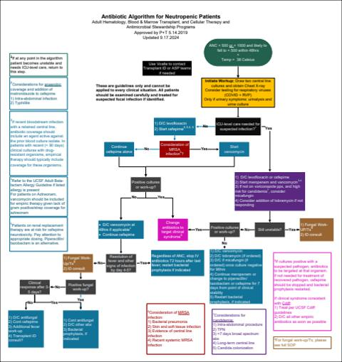
Febrile NeutropeniaMission BayMt ZionParnassusStanyan/HydePDFNov 26, 2024- Gram-negative Bloodstream Infection
Disclaimer: Practice guidelines are intended to assist with clinical decision-making for common situations but cannot replace evaluation and management decisions based on individual…
Mission BayMt ZionParnassusStanyan/HydeFull textJun 6, 2025 - Guidelines for Blood Culture PCR Results SFVA
The BioFire® FilmArray® Blood Culture Identification Panel (BCID) 2 is a test used to rapidly identify pathogens by amplifying DNA through PCR. This laboratory method helps identify…
VAFull textAug 19, 2024 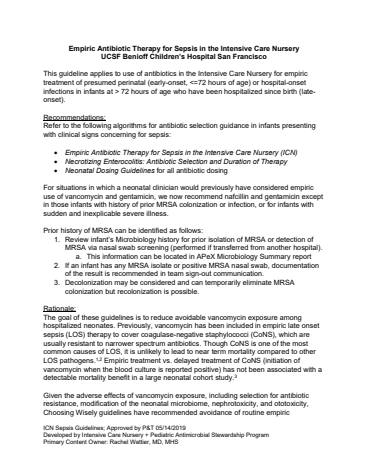
Guidelines for Sepsis in the ICNThis guideline applies to use of antibiotics in the UCSF Benioff Children's Hospital San Francisco Intensive Care Nursery for empiric treatment of presumed perinatal (early-onset, <=72…
BCH SFPDFFull textMay 14, 2019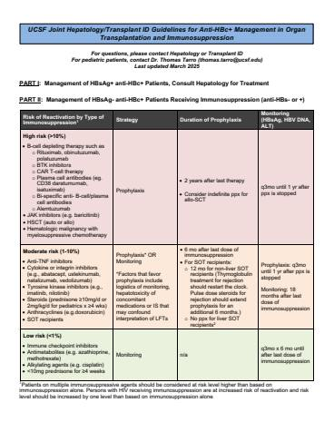
HBV prophylaxisUCSF Joint Hepatology/Transplant ID Guidelines For Anti-HBc+ Management In Organ Transplantation and Immunosuppression
Mission BayMt ZionParnassusStanyan/HydePDFMar 11, 2025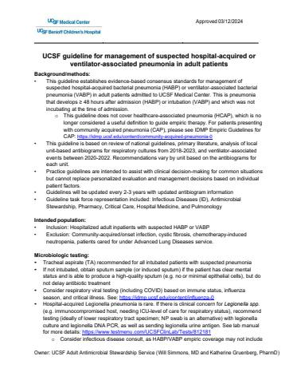
Hospital-acquired PneumoniaGuidelines for assessment and treatment of hospital-acquired or ventilator-associated pneumonia in adults at UCSFMC
Mission BayMt ZionParnassusStanyan/HydePDFJul 15, 2024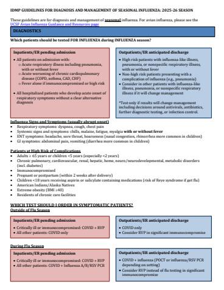
InfluenzaThe above guidelines (linked pdf) are for diagnosis and management of seasonal influenza. For avian influenza, please see the UCSF Avian Influenza Guidance and Resources page here:…
BCH SFMission BayMt ZionParnassusStanyan/HydePDFFeb 13, 2026- IV to PO Syndromic Step-Down Guidance
De-escalate to oral therapy: For many infections, oral therapy is at least as effective as IV therapy, and patients can be stepped down to oral therapy once they are clinically…
BCH OaklandBCH SFMission BayMt ZionParnassusStanyan/HydeFull textOct 11, 2024 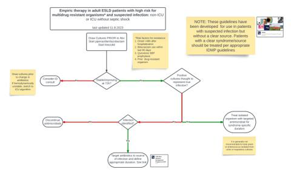
LTU GuidelinesGuidance for empiric antimicrobial therapy in patients with end-stage liver disease
Mission BayMt ZionParnassusStanyan/HydePDFNov 30, 2023- Mpox Treatment
https://www.sf.gov/information/mpox-info-and-guidance-health-professionals
Mission BayMt ZionParnassusStanyan/HydeOct 11, 2024 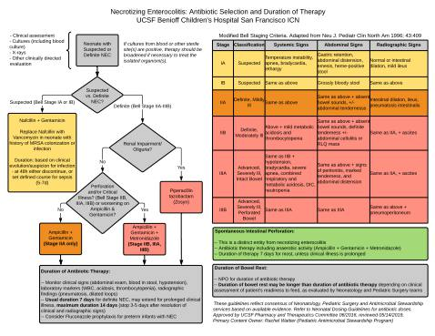
Necrotizing Enterocolitis/Spontaneous Intestinal Perforation: Antibiotic Selection & Duration of TherapyFollow algorithm below for management of necrotizing enterocolitis in the Intensive Care Nursery:
BCH SFPDFMay 14, 2019- Necrotizing Soft Tissue Infection (NSTI)
Necrotizing Soft Tissue Infection Guidelines
Mission BayMt ZionParnassusStanyan/HydeVAZSFGPDFFull textJan 8, 2026  Pediatric Appendicitis Clinical Algorithm
Pediatric Appendicitis Clinical AlgorithmThe following clinical algorithms were developed for management of pediatric patients with suspected or established appendicitis:
BCH OaklandBCH SFPDFFull textNov 20, 2024- Pneumocystis Prophylaxis
Pneumocystis jirovecii pneumonia (PJP) primary prophylaxis in adults
Mission BayMt ZionParnassusStanyan/HydeFull textDec 8, 2025 - RSV Treatment
UCSF Medical Center Guideline for Management of Adult Respiratory Syncytial Virus (RSV) - 2022
Mission BayMt ZionParnassusStanyan/HydeFull textJan 25, 2023 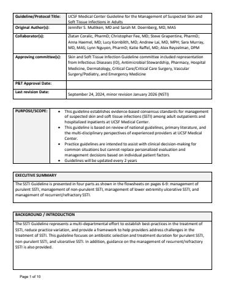
Skin and Skin Structure InfectionConsensus standards for management of suspected skin and soft tissue infections (SSTI) among adult outpatients and hospitalized inpatients at UCSF Medical Center.
Mission BayMt ZionParnassusStanyan/HydeVAZSFGPDFMar 17, 2026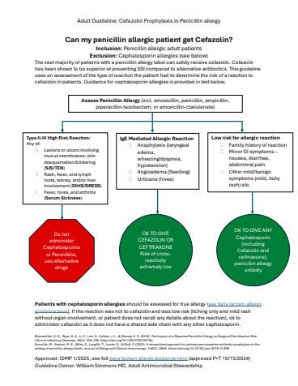
Surgical ProphylaxisMore in depth information about management of allergies can be found here: Allergy (Beta-lactam)
Mission BayMt ZionParnassusStanyan/HydePDFDec 8, 2025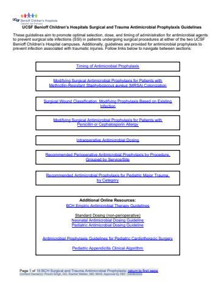
Surgical Prophylaxis PediatricsBCH OaklandBCH SFPDFJul 11, 2025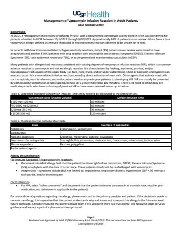
Vancomycin Infusion ReactionManagement of Vancomycin Infusion Reaction in Adult Patients
Mission BayMt ZionParnassusStanyan/HydePDFFull textJan 4, 2024- VASF Intra-abdominal Infections (IAI) Treatment Guidelines
Intra-abdominal infections are those contained within the peritoneal cavity or retroperitoneal space.
VAFull textDec 1, 2023 - VASF Outpatient Tuberculosis Evaluation
Evaluation of a patient with possible tuberculosis in the outpatient setting
VAFull textApr 15, 2026 - VASF Spontaneous Bacterial Peritonitis (SBP) Treatment Guidelines
Spontaneous Bacterial Peritonitis (SBP)
VAFull textNov 29, 2023 - VASF Urinary Tract Infections (UTI) Treatment Guidelines
Urinary Tract Infections (UTIs)
VAFull textNov 29, 2023 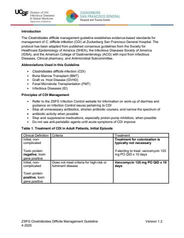
ZSFG Adult C. difficile Infection GuidelineThe Clostridioides difficile management guideline establishes evidence-based standards for management of C. difficile infection (CDI) at Zuckerberg San Francisco General Hospital.
ZSFGPDFMay 1, 2025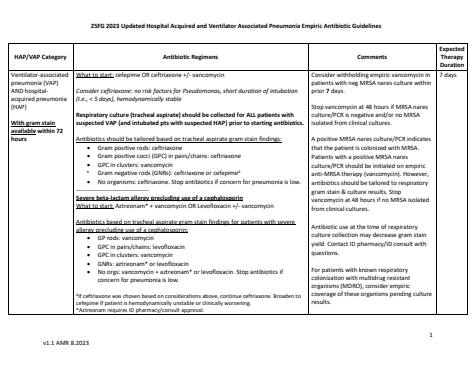
ZSFG HAP/VAP Empiric Antibiotic GuidelinesZSFGPDFAug 30, 2023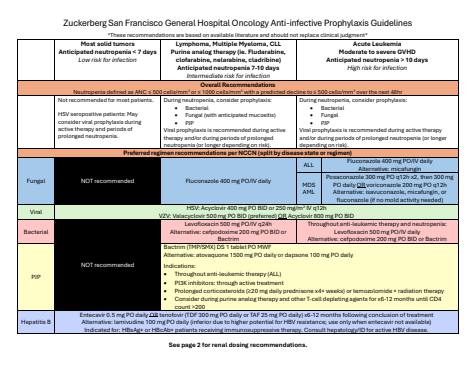
ZSFG Oncology Antimicrobial Prophylaxis GuidelineZSFGPDFSep 15, 2026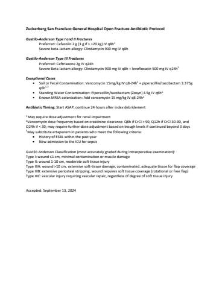
ZSFG Open Fracture Antibiotic Prophylaxis ProtocolZSFGPDFSep 13, 2024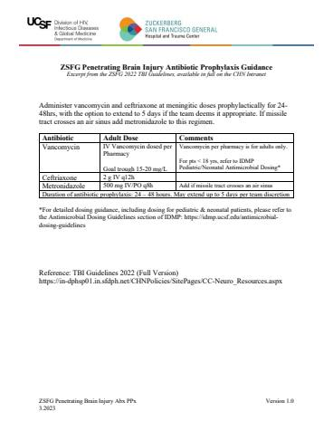
ZSFG Penetrating Brain Injury Antibiotic ProphylaxisZSFGPDFMar 17, 2023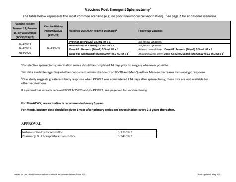
ZSFG Post-Emergent Splenectomy Vaccination GuidelineZSFGPDFJul 26, 2022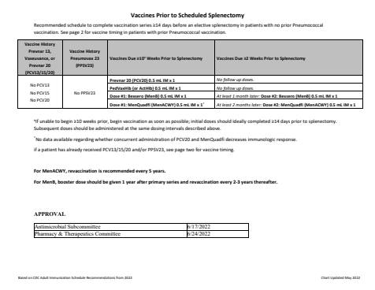
ZSFG Pre-Splenectomy Vaccination GuidelineZSFGPDFJul 26, 2022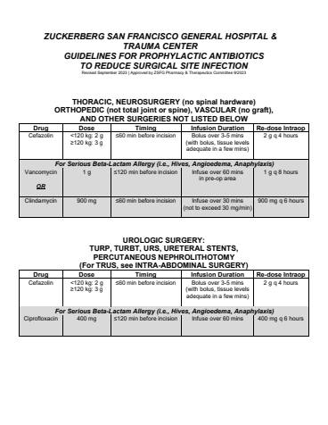
ZSFG Surgical Prophylaxis GuidelinesZSFGPDFSep 30, 2023
Diagnostic Testing
 Biofire Blood Culture Identification (BCID) Panel - BCH Oakland
Biofire Blood Culture Identification (BCID) Panel - BCH OaklandThe purpose of this document is to provide general guidance for empiric therapy based on the results of the rapid blood culture identification panel (BCID-II) used at BCH Oakland. Please…
BCH OaklandPDFFull textMay 24, 2024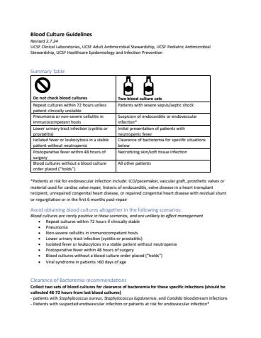
Blood Culture Guidelines - UCSF Medical CenterBCH SFMission BayMt ZionParnassusStanyan/HydePDFFeb 7, 2025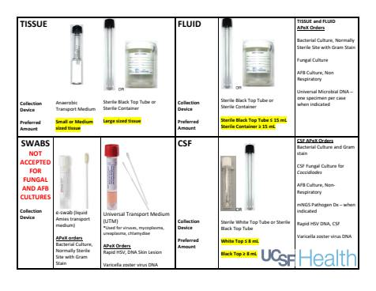
OR Microbiology Specimen CollectionOR Specimen Collection Guidelines are also available in the Microbiology Guide , in the specimen collection section, under "General"
BCH SFMission BayMt ZionParnassusStanyan/HydePDFApr 23, 2024- ProcalcitoninMission BayMt ZionParnassusStanyan/HydeSep 13, 2018
- Rapid Gram-positive Blood Culture
When should I consult Infectious Diseases about a positive blood culture?
BCH SFMission BayMt ZionParnassusStanyan/HydeFull textDec 14, 2020 - testyJan 12, 2023
- VZV CNS Infection Testing
UCSF Neurology/ Infectious Diseases Diagnostic Testing Recommendations For Patients with Suspected CNS VZV Infection
Mission BayMt ZionParnassusStanyan/HydeFull textAug 7, 2023
Policies, Procedures, & Protocols
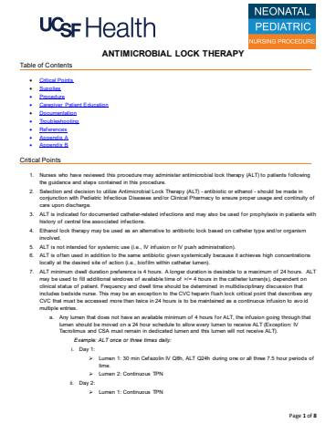
BCH Antimicrobial Lock Therapy (ALT) PolicyBCH OaklandBCH SFPDF- Extended Infusion Beta-Lactams
Ripal Jariwala, PharmD, BCIDP, AAHVIP
Mission BayMt ZionParnassusUCSF loginFull textJul 30, 2026 - Frequently Asked Questions (FAQs) Regarding Microbiology Results & Infectious Disease-Related Questions (UCSF West Bay Sites)
For pediatric patients with active ID consults, please contact the pediatric ID team if you have any questions about susceptibility to antibiotics not listed. For patients without ID…
BCH SFMission BayMt ZionParnassusStanyan/HydeFull textMay 4, 2026 - Inpatient Process for Ordering Restricted Antimicrobials for Adults at UCSFMission BayMt ZionParnassusStanyan/HydeUCSF loginDec 11, 2025
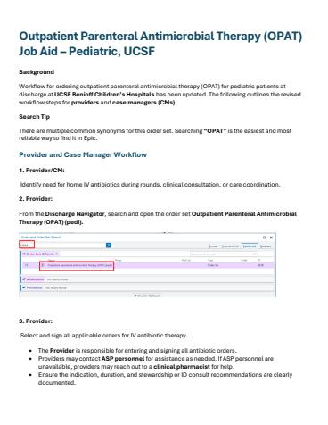
Outpatient Parenteral Antimicrobial Therapy (OPAT) Job Aid – Pediatric, UCSFBCH OaklandBCH SFPDF Piperacillin-tazobactam Extended Infusion
Piperacillin-tazobactam Extended InfusionAdult Extended Infusion Piperacillin/tazobactam Protocol
Mission BayMt ZionParnassusStanyan/HydePDFFull textSep 24, 2024- Vancomycin Initial Dosing Nomogram
>90 mL/min (complicated* infection & age < 65)
ZSFGFull textMay 30, 2025 - VASF Beta-Lactam Test Dosing Protocol
A formalized process for evaluating hospitalized patients with reported beta-lactam (penicillin, cephalosporin) allergies who need one of these antibiotics during their admission. Those…
VAFull textDec 4, 2023 - VASF Restricted Antimicrobials
Restricted Antimicrobials at San Francisco VA (VASF)
VAFull textJun 2, 2025 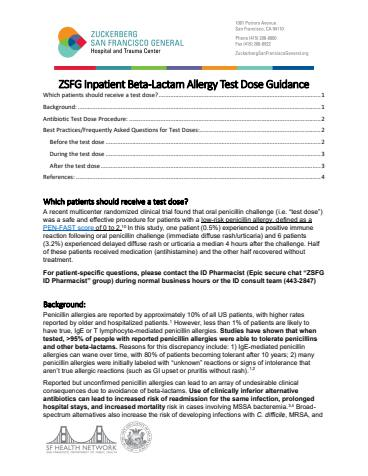
ZSFG Inpatient Beta-Lactam Allergy Test Dose GuidanceZSFGPDFJul 28, 2025- ZSFG Restricted Antimicrobials & Workflow
Restricted Antimicrobials at Zuckerberg San Francisco General
ZSFGFull textAug 30, 2024